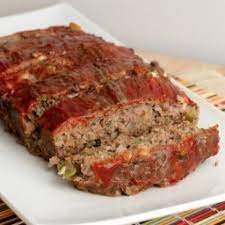

Meatloaf

Meatloaf Ingredients
- Ground Chuck: This recipe calls for ground chuck, but some reviewers like to use other kinds of ground meat (like beef or venison).
- Vegetables: The nearly-pureed carrot, celery, onion, bell pepper, mushrooms, and garlic will keep the meatloaf moist and flavorful.
- Worcestershire Sauce: A tablespoon of Worcestershire sauce gives the meatloaf its umami-rich flavor.
- Egg: The egg helps bind the meatloaf together.
- Spices: Dried Italian herbs, salt, pepper, and cayenne pepper to season the meatloaf.
- Bread Crumbs: Bread crumbs will bind the meatloaf together.
- Glaze: This meatloaf has a glaze made with brown sugar, ketchup, Dijon mustard, and sriracha.
Meatloaf Instructions
- Combine the chopped vegetables and garlic in a food processor until nearly pureed.
- Combine the vegetables, ground chuck, Worcestershire sauce, spices, and egg. Sprinkle in the bread crumbs and mix them with your hands (be careful not to overmix).
- Form the meat mixture into a loaf and place it in a prepared baking pan. Bake for about 15 minutes.
- Combine brown sugar, ketchup, Dijon, and sriracha to make the glaze.
- Spoon the glaze over the slightly hot meatloaf. Return meatloaf to the oven and bake until the internal temperature reaches 160 degrees F.